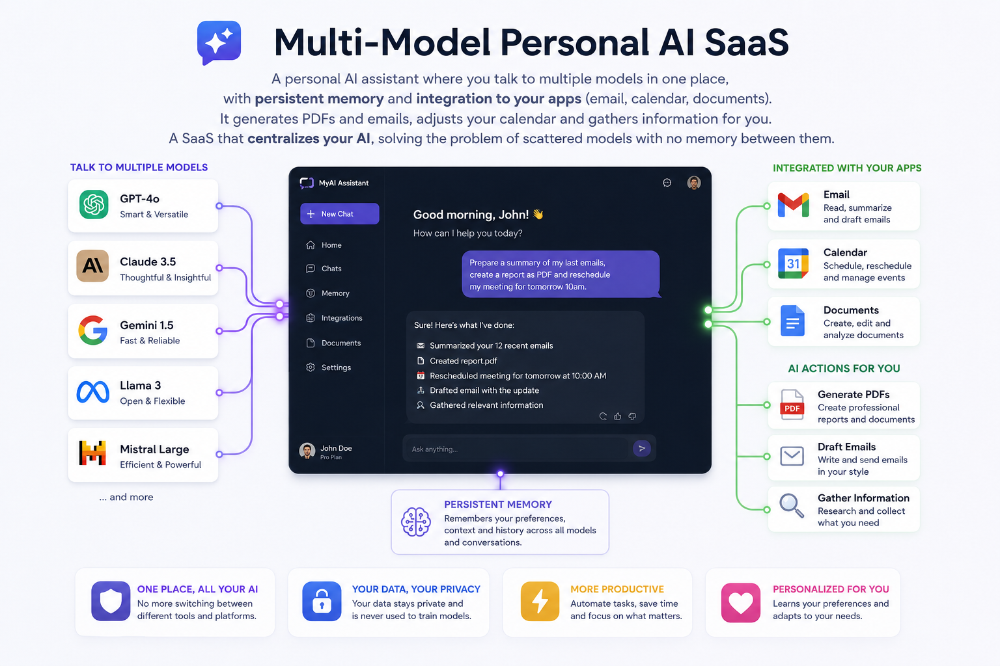
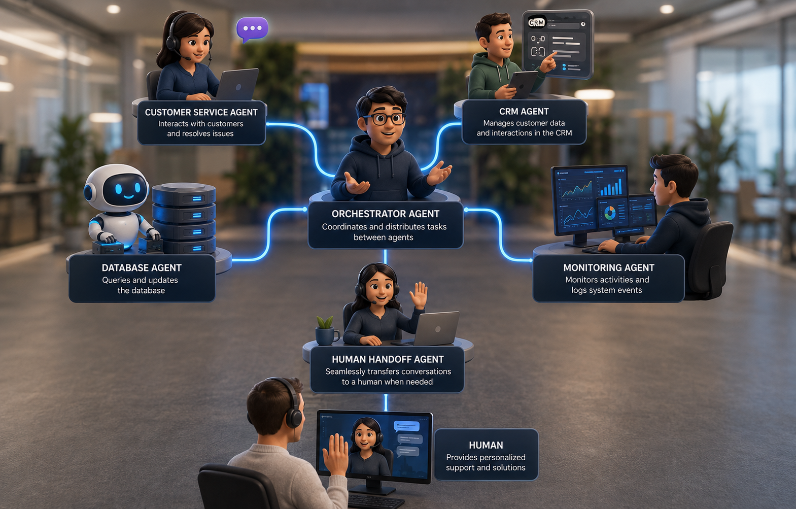
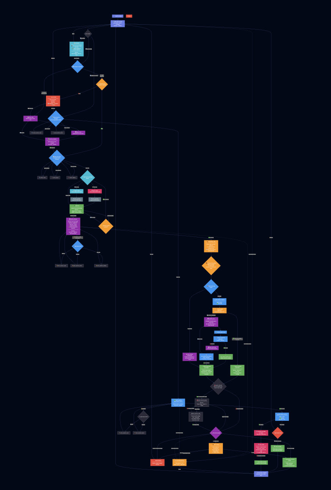
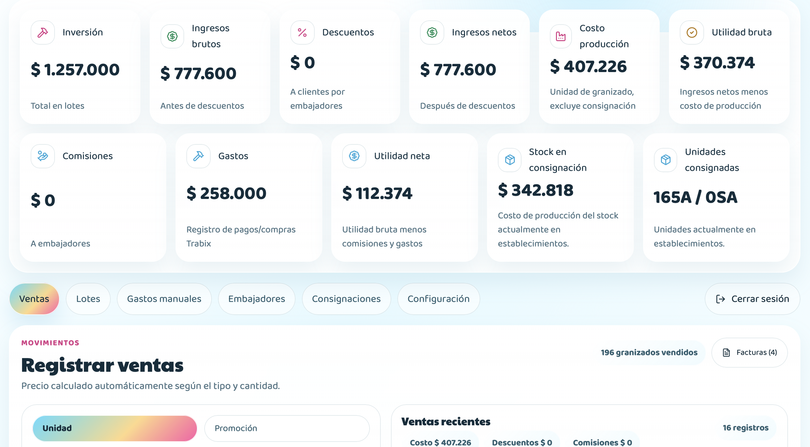
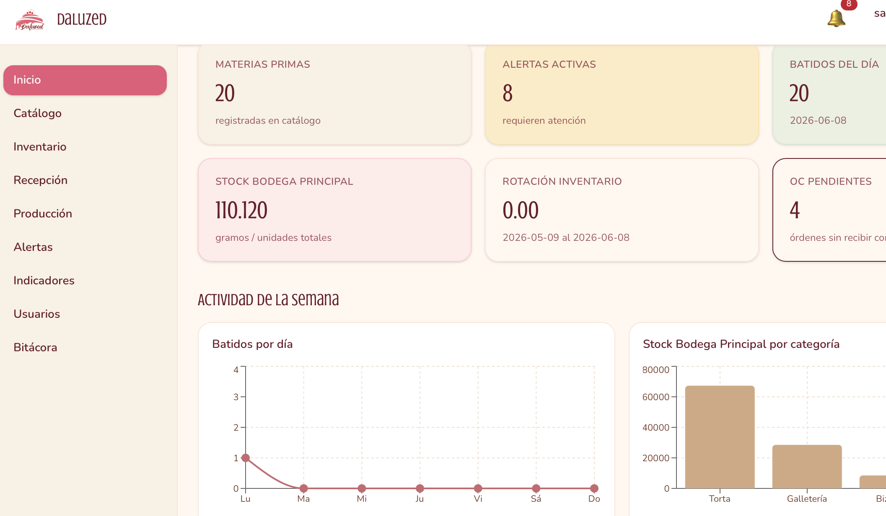

Mapa de contribuciones — año en curso
Cargando…
Software Engineer & Builder

Diseño y construyo agentes de IA, sistemas multi-agente y backends personalizados — soluciones hechas a medida, no plantillas. Mi foco hoy es la IA aplicada: agentes autónomos, automatización, RAG y LLMs, con una base sólida de ingeniería backend en Python y Rust. Si tenés un problema real que vale la pena resolver con tecnología nueva, hablemos.
Soy software engineer y builder. Construyo agentes de IA y sistemas backend a medida que automatizan procesos manuales y resuelven problemas concretos. Mi sweet spot: soluciones 100% personalizadas — agentes autónomos self-hosted, sistemas multi-agente e integraciones complejas — no plantillas ni código que se rompe en seis meses.
Voy más allá del agente "básico" de n8n: trabajo con frameworks de agentes autónomos totalmente personalizables (como OpenClaw) y orquestación multi-agente. Y todo eso lo sostengo con ingeniería backend real — he construido desde un bot de pedidos en producción escrito en Rust hasta arquitecturas de microservicios y backends Django con 20+ endpoints. Cada proyecto, un problema real, no una demo.
Trabajo de forma directa y enfocada: pocas reuniones, mucho código, decisiones documentadas. Aprendo rápido y me adapto a lo que el problema necesite. Si querés algo construido bien la primera vez, esa es la idea.
Desarrollar soluciones innovadoras que integren IA y tecnologías full-stack para resolver problemas reales, hacer el mundo más funcional y generar impacto positivo. Me veo creando ecosistemas digitales que combinen excelencia técnica con alto valor para usuarios y empresas.

Asistente de IA personal donde hablás con distintos modelos en un solo lugar, con memoria persistente e integración a tus apps (correo, calendario, documentos). Genera PDFs y correos, ajusta tu calendario y recopila información por vos. Un SaaS que centraliza tu IA.

Sistema de agentes de IA especializados que se comunican entre sí, cada uno dedicado a una función concreta. Construido para una vertical real (oficios/tradies en Australia). Demuestra orquestación multi-agente: agentes que colaboran, se pasan tareas y resuelven en conjunto.

Bot de pedidos por WhatsApp para un negocio real, escrito en Rust. Sistema completo, no demo: máquina de estados de conversación, persistencia en PostgreSQL, flujo de pedidos y checkout, handoff a asesor, timers con recuperación de timeouts, y un simulador local que corre el mismo runtime de producción. Dockerizado y desplegado en Railway.

Portal interno para el negocio real de granizados Trabix — roles admin y embajador, batches de producción con FIFO, comisiones, ventas al por mayor, consignaciones y facturación PDF. Next.js · Supabase · Upstash Redis. En producción en Vercel.

Backend completo para sistema de gestión veterinaria. Arquitectura de datos, APIs REST, módulos de pacientes, agendamiento, historias clínicas y facturación.

Sistema full-stack en producción para una empresa real de repostería. FEFO en consumo de materias primas, FIFO en despacho, alertas de stock vía WebSocket y RBAC con 4 roles. 125 tests automatizados con CI/CD.
COLEGIO FRANCISCANO SAN LUIS REY
2016 - 2023
Armenia, Quindío - Colombia
CORPORACIÓN UNIVERSITARIA EMPRESARIAL ALEXANDER VON HUMBOLDT
Ene 2024 - Actualidad
Armenia, Quindío - Colombia
Nativo
En proceso — A1
Disponible para proyectos freelance: agentes de IA, automatización, backends a medida e integraciones. Contame tu proyecto y te respondo en menos de 24h con un primer estimado claro de alcance y tiempos. Si encaja, encaja.
Samuel entrega rápido y la calidad del código se ve. Documenta las decisiones, no improvisa.
Se nota que piensa la arquitectura antes de codear. Eso ahorra meses de refactor después.
¿Trabajamos juntos? Si te sirve, te pido el quote después del proyecto.
Cargando…